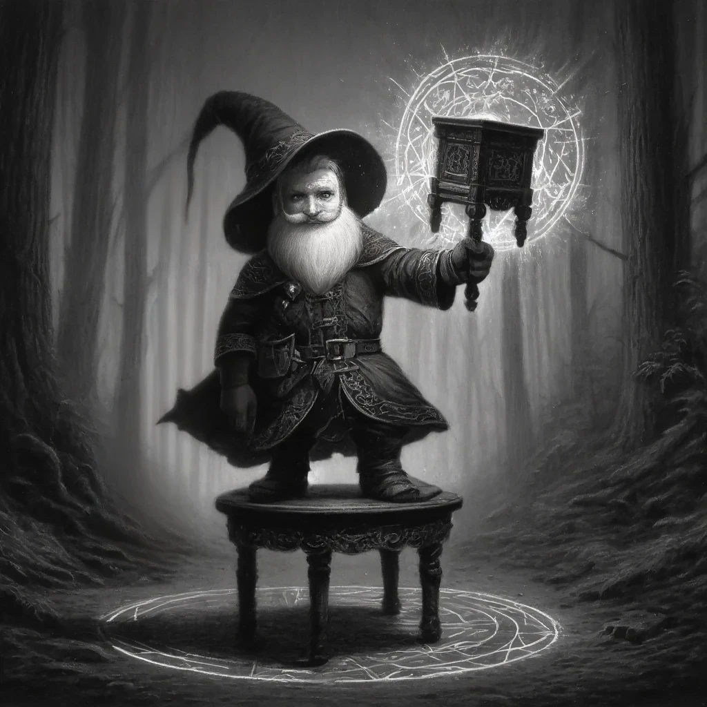

Cosmopoli Tan
Gelehrter Gnome mit vorliebe für Eldritch Blast. Studiert Kreaturen kleiner als Nachttische, mit momentaner Spezialisierung auf Goblins.
Gelehrter Gnome mit vorliebe für Eldritch Blast. Studiert Kreaturen kleiner als Nachttische, mit momentaner Spezialisierung auf Goblins.

Gekonnter Halb-elfischer Barde mit unzähligen Fans im Land und einer magischen Trommel. Kann keinem schönen Gesicht widerstehen und hat die besten Lieder für Kampf, Gasthaus und Gasthaus-Kämpfe.
Halb-elfischer Mönch der schon vor langem aus seiner Ordnung auf den Moonshaes ausgestoßen wurde. Seine Stärken sind Alkohol und Kampf mit bloßen Fäusten.
Halb-ork der früher als Söldner arbeitete. Wenn seine Gegner nicht von seiner enganliegenden Kampfrüstung abgelenkt sind, dann von einer siner zwei Äxten.
Goblin der zuerst Gefangener in der Bag of Holding der Spieler war. Später war er leiter des Golbin-Resozialisierungsprogramms initiiert von Cosmopoli.
Wumkbanok's ehemaliger General an der Ost-Front. Ein Feigling der lieber andere an die Front schickt.